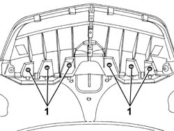
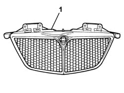
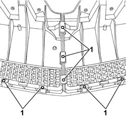
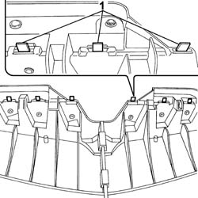
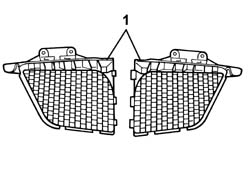
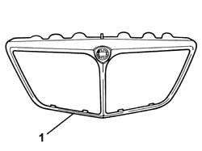

7055A40 RADIATOR SHIELD - R R
- Path
- Procedures > 70 FITTINGS > 7055 MOULDINGS ON PROTECTIONS > 7055A EXTERIOR MOULDINGS > 7055A40 RADIATOR SHIELD - R R
- Kind
- repair procedure (removal / refitting; the operation number is the code)
- Applies to
- all engines; all production periods
- Interactive page
- https://sloeber94.github.io/elrnDB-fUlss/en/#/179007926
Applies to: all engines; all production periods
 Removing
Removing
 Refitting
Refitting- Open the bonnet.
1. Undo the bolts fixing the grille to the bonnet.

Applies to: all engines; all production periods
1. Remove the grille on the bonnet lid.

Applies to: all engines; all production periods
1. At the bench, using a drill fitted with a suitable helical point, remove the rivets fastening the grille to the radiator.

Applies to: all engines; all production periods
1. Release the radiator grille from the fastening clips.

Applies to: all engines; all production periods
1. Remove the two parts of the radiator grille.

Applies to: all engines; all production periods
1. Remove the outer grille complete with badge.

Applies to: all engines; all production periods
Refitting
Removing- Fit the two radiator grilles on the outer grille.
- Attach the radiator grille to the fastening clips.
- Using a riveter and suitable size new rivets, fasten the two radiator grilles to the outer grille.
- Fit the grille on the bonnet lid.
- Tighten the bolts fixing the grille to the bonnet.
- Close the bonnet.